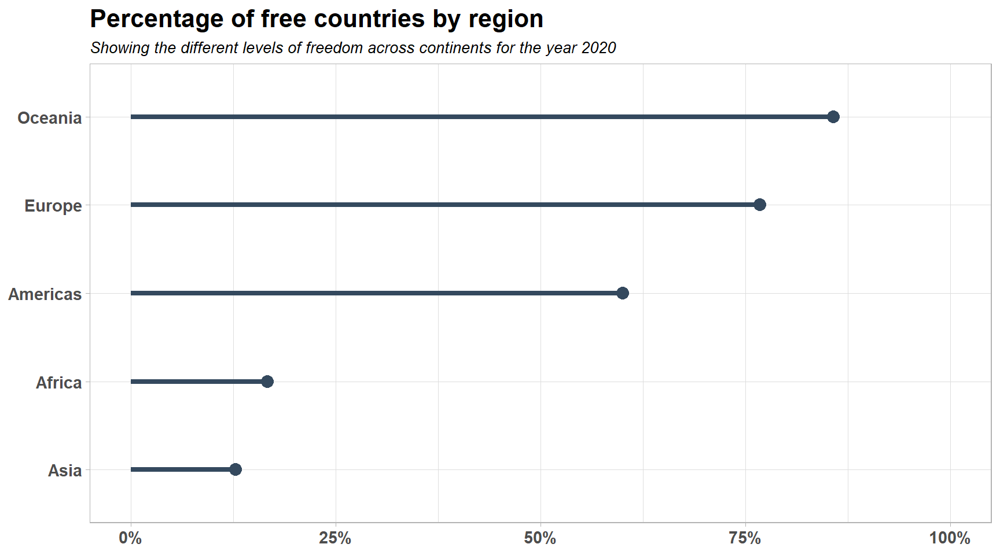
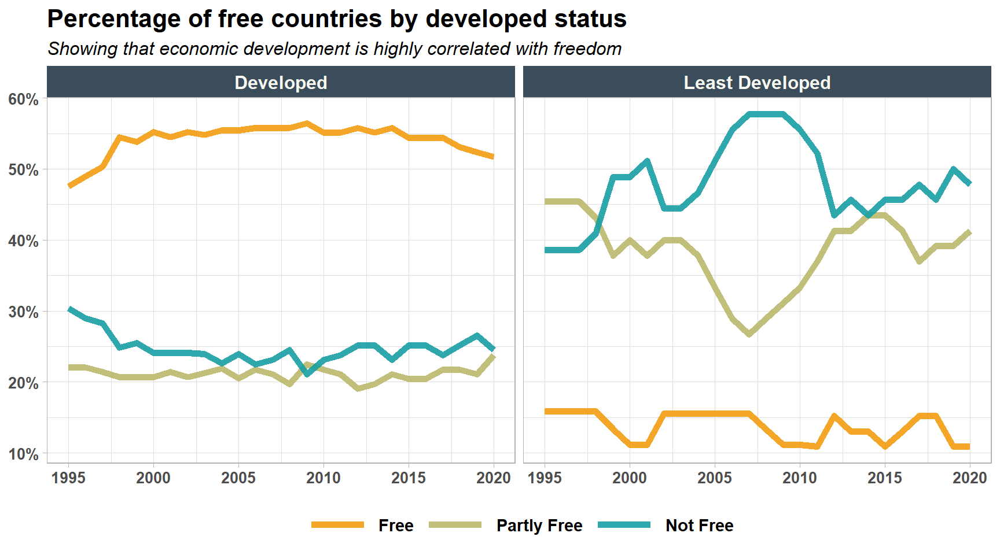
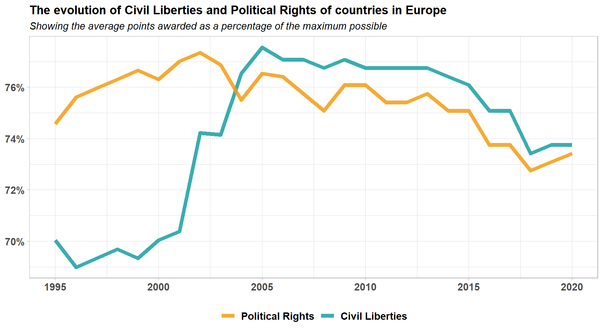
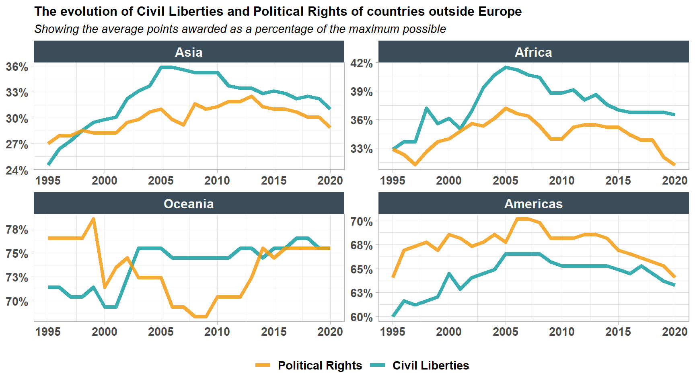
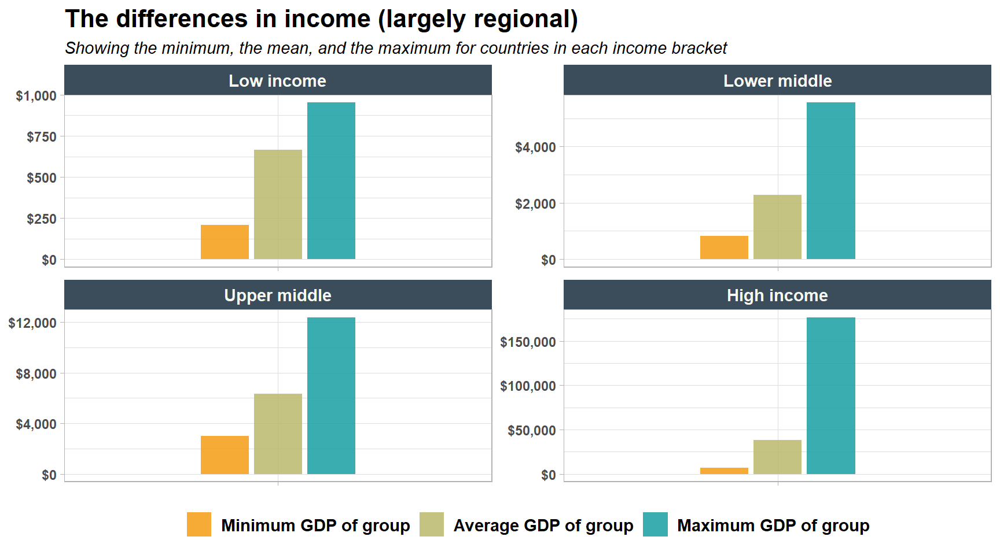
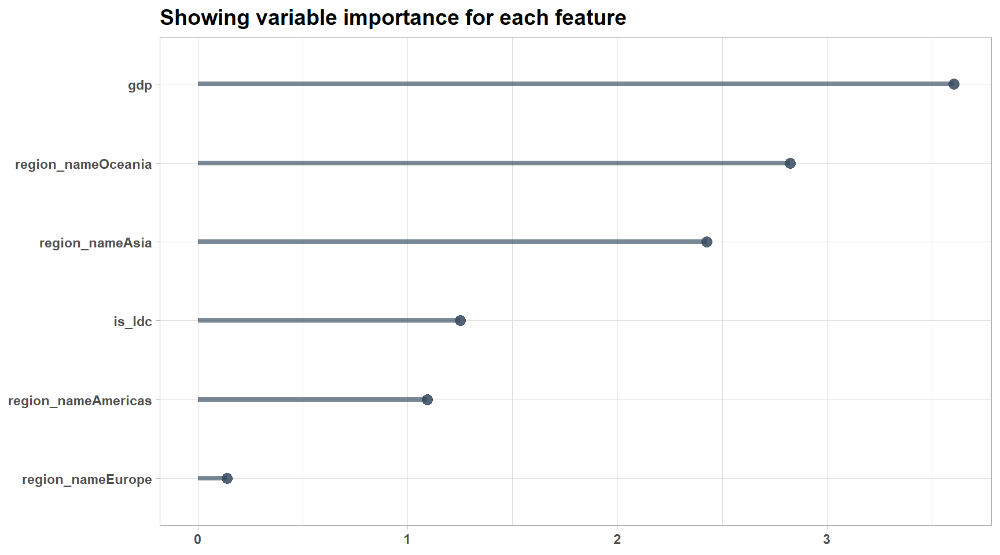

library(tidyverse)
library(tidymodels)
library(janitor)
library(scales)
library(WDI)
library(countrycode)
library(vip)Freedom Index
1 Introduction
The data we’ll be using for the exercise comes from the Tidy Tuesday repository on Github and deals with political rights and civil liberties in each of the world’s countries. The dataset is available here.
First let’s load the packages we’ll be using:
I’ve already downloaded the dataset to my local machine, so we can now read in the data:
freedom_data <- read_csv("freedom_data.csv")We can get an idea of the data with which we’ll be dealing by using the glimpse() function:
glimpse(freedom_data)Rows: 4,979
Columns: 8
$ country <chr> "Afghanistan", "Afghanistan", "Afghanistan", "Afghanistan"…
$ year <dbl> 1995, 1996, 1997, 1998, 1999, 2000, 2001, 2002, 2003, 2004…
$ CL <dbl> 7, 7, 7, 7, 7, 7, 7, 6, 6, 6, 5, 5, 5, 6, 6, 6, 6, 6, 6, 6…
$ PR <dbl> 7, 7, 7, 7, 7, 7, 7, 6, 6, 5, 5, 5, 5, 5, 6, 6, 6, 6, 6, 6…
$ Status <chr> "NF", "NF", "NF", "NF", "NF", "NF", "NF", "NF", "NF", "NF"…
$ Region_Code <dbl> 142, 142, 142, 142, 142, 142, 142, 142, 142, 142, 142, 142…
$ Region_Name <chr> "Asia", "Asia", "Asia", "Asia", "Asia", "Asia", "Asia", "A…
$ is_ldc <dbl> 1, 1, 1, 1, 1, 1, 1, 1, 1, 1, 1, 1, 1, 1, 1, 1, 1, 1, 1, 1…2 Data Cleaning
Are there any missing values?
freedom_data |>
summarise(across(everything(), \(x) sum(is.na(x)))) |>
pivot_longer(cols = everything(), names_to = "vars", values_to = "totals") |>
arrange(vars)# A tibble: 8 × 2
vars totals
<chr> <int>
1 CL 0
2 PR 0
3 Region_Code 0
4 Region_Name 0
5 Status 0
6 country 0
7 is_ldc 0
8 year 0We can use the janitor package to help clean up the variable names, which aren’t particularly user friendly as things stand. We can also clean up one of the values of the country feature.
freedom_data <- freedom_data |>
clean_names() |>
rename(civil_liberties = cl, political_rights = pr) |>
mutate(country = if_else(country == "Côte d’Ivoire", "Ivory Coast", country))Thankfully this is all the data-cleaning we need to do.
3 Exploratory Analysis
Start with a basic plot showing the situation by region:
freedom_data |>
filter(year == 2020) |>
group_by(region_name) |>
summarise(
total_countries = n(),
total_free = sum(status == "F"),
total_oppressed = total_countries-total_free,
percentages = total_free/total_countries,
.groups = "drop"
) |>
mutate(
region_name = factor(
region_name,
levels = c("Asia", "Africa", "Americas", "Europe", "Oceania")
)
) |>
arrange(desc(percentages)) |>
ggplot(aes(x = region_name, y = percentages)) +
geom_point(colour = "#34495E", size = 3.5) +
geom_segment(
aes(x = region_name, xend = region_name, y = 0, yend = percentages),
colour = "#34495E",
linewidth = 1.5
) +
coord_flip() +
scale_y_continuous(
breaks = c(0, 0.25, 0.5, 0.75, 1),
limits = c(0, 1),
labels = percent
) +
labs(
x = NULL,
y = NULL,
title = "Percentage of free countries by region",
subtitle =
"Showing the different levels of freedom across continents for the year 2020"
) +
theme_light() +
theme(
axis.text.x = element_text(size = 11, face = "bold"),
axis.text.y = element_text(size = 11, face = "bold"),
plot.title = element_text(size = 16, face = "bold"),
plot.subtitle = element_text(size = 10, face = "italic")
)
Clearly the situation is very bad indeed in Asia and Africa. As these regions are less economically developed than the rest, perhaps it would be worthwhile to build a plot based on the is_ldc (least developed country) feature:
freedom_data |>
group_by(year, is_ldc) |>
mutate(
free = sum(status == "F"),
part_free = sum(status == "PF"),
not_free = sum(status == "NF")
) |>
ungroup() |>
select(year, is_ldc, contains("free")) |>
distinct() |>
group_by(year, is_ldc) |>
mutate(totals = free + part_free + not_free) |>
ungroup() |>
mutate(
free_percent = free / totals,
part_free_percent = part_free / totals,
not_free_percent = not_free / totals
) |>
select(year, is_ldc, contains("percent")) |>
pivot_longer(
cols = contains("percent"),
names_to = "names",
values_to = "values"
) |>
mutate(is_ldc = if_else(is_ldc == 1, "Least Developed", "Developed")) |>
ggplot(aes(x = year, y = values, colour = names)) +
geom_line(size = 2, alpha = 0.9) +
scale_y_continuous(labels = label_percent(accuracy = 1)) +
scale_color_manual(
values = c("#F39C12", "#bab86c", "#179FA3"),
labels = c("Free", "Partly Free", "Not Free")
) +
labs(
x = NULL,
y = NULL,
title = "Percentage of free countries by developed status",
subtitle = "Showing that economic development is highly correlated with freedom"
) +
theme_light() +
facet_wrap(~is_ldc) +
theme(
axis.text.x = element_text(size = 10, face = "bold"),
axis.text.y = element_text(size = 10, face = "bold"),
strip.text.x = element_text(size = 12, face = "bold"),
plot.title = element_text(size = 16, face = "bold"),
plot.subtitle = element_text(size = 12, face = "italic"),
legend.text = element_text(size = 11, face = "bold"),
strip.background = element_rect(fill = "#3b4d5b"),
strip.text = element_text(colour= "#f8f8f2"),
legend.title = element_blank(),
legend.key.width = unit(1.5, "cm"),
legend.position = "bottom"
) 
The difference between the developed and least-developed world is striking. We can also quantify this difference with a Chi_squared test of independence using the infer package bundled with tidymodels:
diff_hat <- freedom_data |>
mutate(is_ldc = if_else(is_ldc == 1, "Least Developed", "Developed")) |>
specify(status ~ is_ldc) |>
calculate(stat = "Chisq")
freedom_data |>
mutate(is_ldc = if_else(is_ldc == 1, "Least Developed", "Developed")) |>
specify(status ~ is_ldc) |>
assume(distribution = "Chisq") |>
get_p_value(obs_stat = diff_hat, direction = "two-sided")# A tibble: 1 × 1
p_value
<dbl>
1 0The p_value is close to zero, so we can conclude that status and is_ldc are not independent.
As always, we should not jump to the conclusion that there is a causal relationship between the two. Besides, even if we do believe that the two are in a causal relationship, it is difficult to say in which direction this relationship runs. Are countries under-developed because they are not free, or are they not free because they ar under-developed? There’s nothing in our data that could answer this question.
However, we can be more confident in assessing the direction in which our freedoms and civil liberties are heading. Consider the following plot:
freedom_data |>
filter(region_name == "Europe") |>
mutate(
percent_pr = political_rights / 7, # here the ratings are from 1 to 7
percent_cl = civil_liberties / 7
) |>
group_by(year, region_name) |>
summarise(
pr_x_year = 1 - mean(percent_pr),
cl_x_year = 1 - mean(percent_cl),
.groups = "drop"
) |>
pivot_longer(
cols = pr_x_year:cl_x_year,
names_to = "names",
values_to = "values"
) |>
ggplot(aes(x = year, y = values, colour = names)) +
geom_line(linewidth = 2, alpha = 0.85) +
theme_light() +
scale_y_continuous(labels = label_percent(accuracy = 1)) +
scale_color_manual(
values = c("#179FA3", "#F39C12"),
labels = c("Civil Liberties", "Political Rights"),
guide = guide_legend(reverse = TRUE)
) +
labs(
x = NULL,
y = NULL,
title = "The evolution of Civil Liberties and Political Rights of countries in Europe",
subtitle = "Showing the average points awarded as a percentage of the maximum possible"
) +
theme(
axis.text.x = element_text(size = 11, face = "bold"),
axis.text.y = element_text(size = 11, face = "bold"),
plot.title = element_text(size = 13, face = "bold"),
plot.subtitle = element_text(face = "italic"),
legend.text = element_text(size = 11, face = "bold"),
legend.title = element_blank(),
legend.position = "bottom"
)
Here we can see that Europe is going backwards in terms of freedoms, a trend which is present in all regions except Oceania:
freedom_data |>
filter(region_name != "Europe") |>
mutate(region_name = factor(
region_name,
levels = c("Asia", "Africa", "Oceania", "Americas")
)) |>
mutate(
percent_pr = political_rights / 7,
percent_cl = civil_liberties / 7
) |>
group_by(year, region_name) |>
summarise(
pr_x_year = 1 - mean(percent_pr),
cl_x_year = 1 - mean(percent_cl),
.groups = "drop"
) |>
pivot_longer(
cols = pr_x_year:cl_x_year,
names_to = "names",
values_to = "values"
) |>
ggplot(aes(x = year, y = values, colour = names)) +
geom_line(linewidth = 1.75, alpha = 0.85) +
theme_light() +
scale_y_continuous(labels = label_percent(accuracy = 1)) +
scale_color_manual(
values = c("#179FA3", "#F39C12"),
labels = c("Civil Liberties", "Political Rights"),
guide = guide_legend(reverse = TRUE)
) +
labs(
x = NULL,
y = NULL,
title =
"The evolution of Civil Liberties and Political Rights of countries outside Europe",
subtitle =
"Showing the average points awarded as a percentage of the maximum possible"
) +
facet_wrap(~region_name, scales = "free") +
theme(
axis.text.x = element_text(size = 11, face = "bold"),
axis.text.y = element_text(size = 11, face = "bold"),
strip.text.x = element_text(size = 12, face = "bold"),
plot.title = element_text(size = 12, face = "bold"),
plot.subtitle = element_text(face = "italic"),
legend.text = element_text(size = 11, face = "bold"),
strip.background = element_rect(fill = "#3b4d5b"),
strip.text = element_text(colour= "#f8f8f2"),
legend.title = element_blank(),
legend.position = "bottom"
)
An interesting feature of the above graphs, again with the possible exception of Oceania, is that the level of political_rights and civil_liberties tend to be closely correlated. We can put a number to this relationship by once again using the infer package:
freedom_data |>
specify(political_rights ~ civil_liberties) |>
calculate(stat = "correlation") |>
pull(stat)[1] 0.9355737As we can see, the correlation is very strong.
4 Reading in extra data
We have seen that the freedoms enjoyed by a given country are correlated with: (1) where the country is located in terms of region; and (2) whether the country is developed or not. These two fact suggest a relationship between economic wealth and political freedom.
As such, lets read in some new data. The wdi package—which I learned about from David Robinson’s video on the topic of this very dataset —gives us access to GDP data for each country over the entire time period in which we are interested.
world_bank_data <- WDI(indicator = "NY.GDP.PCAP.CD", extra = TRUE)We need to join the above to our freedom_data dataset. Does the country column in the two datasets line up?
freedom_data |>
anti_join(world_bank_data, by = "country") |>
distinct(country)# A tibble: 25 × 1
country
<chr>
1 Bahamas
2 Bolivia (Plurinational State of)
3 Congo
4 Democratic Republic of the Congo
5 Ivory Coast
6 Egypt
7 Iran (Islamic Republic of)
8 Kyrgyzstan
9 Lao People's Democratic Republic
10 Micronesia (Federated States of)
# ℹ 15 more rowsUnfortunately there are differences between the datasets, so it won’t be possible to join them without a little more work. Thankfully we can use the countrycode() function (found in the countrycodepackage) to save us a lot of data-wrangling work:
freedom_data <- freedom_data |>
mutate(iso2c = countrycode(country, "country.name", "iso2c"))Lets tidy up our world_bank_data before we join the two datasets:
world_bank_data <- world_bank_data |>
rename(gdp = NY.GDP.PCAP.CD) |>
filter(year >= 1995, year <= 2020) |>
select(iso2c, year, gdp, income)Both datasets are now ready for left_join():
freedom_data <- freedom_data |>
left_join(world_bank_data, by = c("iso2c", "year")) |>
drop_na()5 Exploring our new dataset
We should first glimpse() our data:
glimpse(freedom_data)Rows: 4,898
Columns: 11
$ country <chr> "Afghanistan", "Afghanistan", "Afghanistan", "Afghani…
$ year <dbl> 2000, 2001, 2002, 2003, 2004, 2005, 2006, 2007, 2008,…
$ civil_liberties <dbl> 7, 7, 6, 6, 6, 5, 5, 5, 6, 6, 6, 6, 6, 6, 6, 6, 6, 6,…
$ political_rights <dbl> 7, 7, 6, 6, 5, 5, 5, 5, 5, 6, 6, 6, 6, 6, 6, 6, 6, 5,…
$ status <chr> "NF", "NF", "NF", "NF", "NF", "PF", "PF", "PF", "NF",…
$ region_code <dbl> 142, 142, 142, 142, 142, 142, 142, 142, 142, 142, 142…
$ region_name <chr> "Asia", "Asia", "Asia", "Asia", "Asia", "Asia", "Asia…
$ is_ldc <dbl> 1, 1, 1, 1, 1, 1, 1, 1, 1, 1, 1, 1, 1, 1, 1, 1, 1, 1,…
$ iso2c <chr> "AF", "AF", "AF", "AF", "AF", "AF", "AF", "AF", "AF",…
$ gdp <dbl> 174.9310, 138.7068, 178.9541, 198.8711, 221.7637, 254…
$ income <chr> "Low income", "Low income", "Low income", "Low income…What counts as a high-income country? We can answer this by taking the average of each income group:
freedom_data |>
filter(year == 2020) |>
mutate(income = case_when(
income == "Lower middle income" ~ "Lower middle",
income == "Upper middle income" ~ "Upper middle",
TRUE ~ as.character(income)
)) |>
mutate(income = fct_reorder(income, gdp, .desc = FALSE)) |>
group_by(income) |>
summarise(
min_gdp = min(gdp),
mean_gdp = mean(gdp),
max_gdp = max(gdp),
.groups = "drop"
) |>
pivot_longer(
cols = ends_with("_gdp"),
names_to = "names",
values_to = "values"
) |>
mutate(names = factor(
names,
levels = c("min_gdp", "mean_gdp", "max_gdp")
)) |>
ggplot(aes(x = income, y = values, fill = names)) +
geom_col(position = "dodge2", alpha = 0.85, width = .45) +
theme_light() +
scale_fill_manual(
values = c("#F39C12", "#bab86c", "#179FA3"),
labels = c("Minimum GDP of group", "Average GDP of group", "Maximum GDP of group")
) +
labs(
x = NULL,
y = NULL,
title = "The differences in income (largely regional)",
subtitle =
"Showing the minimum, the mean, and the maximum for countries in each income bracket"
) +
scale_y_continuous(labels = label_dollar()) +
theme(
axis.text.x = element_blank(),
axis.text.y = element_text(face = "bold"),
plot.title = element_text(size = 16, face = "bold"),
plot.subtitle = element_text(size = 11, face = "italic"),
strip.background = element_rect(fill = "#3b4d5b"),
strip.text = element_text(size = 11, face = "bold", colour= "#f8f8f2"), #005300
legend.title = element_blank(),
legend.text = element_text(size = 11, face = "bold"),
legend.position = "bottom"
) +
facet_wrap(~income, scales = "free")
The inequalities are very stark. It is obvious that significant differences exist in GPD within the group—for example, the high income group has a massive disparity between the minimum GPD and the maximum. However, the differences between the groups are greater still, with people in the lower groups existing in desperate poverty.
6 A simple model
We have seen that the region_name, the level of gdp and the is_ldc feature are all indicative of the level of freedom a country enjoys (or not). Lets build a simple model seeing how much of our data these features can explain.
First we do some data-wrangling. We limit ourselves to 2020 and make a new variable, is_free, which we will attempt to predict(). Our indicator variables will be the features discussed above:
model_data <- freedom_data |>
filter(year == 2020) |>
mutate(is_free = if_else(status == "F", "free", "not_free")) |>
select(is_free, region_name, gdp, is_ldc)We set a seed so our results are reproducible:
set.seed(2022)We divide our data into training and test splits. We won’t have any need for cross-validation folds, as a simple algorithm should suffice here.
freedom_split <- initial_split(model_data, prop = 0.75, strata = region_name)
freedom_training <- training(freedom_split)
freedom_testing <- testing(freedom_split)We create a simple recipe() in which we do the pre-processing of our data:
freedom_recipe <- model_data |>
recipe(is_free ~ gdp + region_name + is_ldc) |>
step_string2factor(is_free, skip = TRUE) |>
step_string2factor(all_nominal_predictors()) |>
step_normalize(gdp)We then create our model_spec(). Here we are building a simple logistic_reg() model, which is possible as we have reduced our outcome variable to two levels. Although we have more powerful algorithms available than glm, in this very small dataset a simple algorithm should perform reasonably well.
freedom_spec <- logistic_reg() |>
set_engine("glm") |>
set_mode("classification")We put both the recipe() and the model_spec into a workflow() object:
freedom_workflow <- workflow() |>
add_model(freedom_spec) |>
add_recipe(freedom_recipe)And finally we fit() our model:
freedom_model <- fit(freedom_workflow, data = freedom_training)Now we need to see how well it performed.
7 Evaluation
First lets see which variables were considered to be most important:
freedom_model |>
extract_fit_engine() |>
vi() |>
mutate(Variable = fct_reorder(Variable, Importance)) |>
ggplot(aes(x = Variable, y = Importance)) +
geom_point(size = 3, colour = "#34495E", alpha = 0.85) +
geom_segment(
aes(x = Variable, xend = Variable, y = 0, yend = Importance),
colour = "#34495E",
alpha = 0.65,
linewidth = 1.5
) +
theme_light() +
labs(x = NULL, y = NULL,
title = "Showing variable importance for each feature") +
theme(
axis.text.x = element_text(face = "bold"),
axis.text.y = element_text(face = "bold"),
plot.title = element_text(face = "bold", size = 14),
) +
coord_flip()
It is no surprise to see gdp topping the list. But how well does our model do on unseen data?
freedom_preds <- predict(freedom_model, new_data = freedom_testing)Lets use bind_cols() to add predictions to the validation_data dataset:
freedom_preds <- freedom_testing |>
select(is_free) |>
mutate(is_free = as.factor(is_free)) |>
bind_cols(freedom_preds)We can now test our model using the accuracy() function from the yardstick package:
freedom_preds |>
accuracy(is_free, .pred_class)# A tibble: 1 × 3
.metric .estimator .estimate
<chr> <chr> <dbl>
1 accuracy binary 0.875This seems to be a reasonable level of accuracy. It is surprising, at least to me, how well we can predict freedom from the group of features we selected as our indicator variables. No doubt we could do a lot better by incorporating other, more nuanced geopolitical factors; but the three features we have used - namely region_name, gdp and is_ldc- are capable of doing most of the heavy lifting unaided.